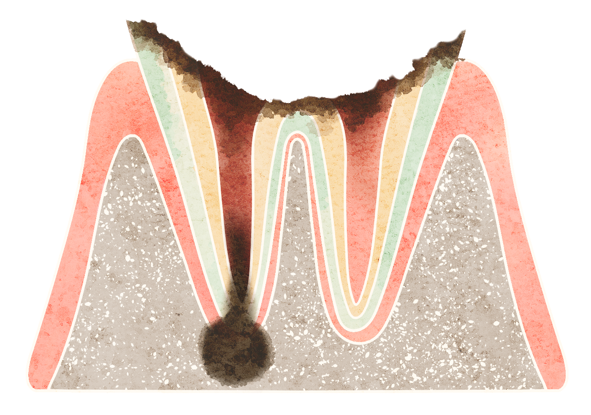
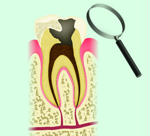
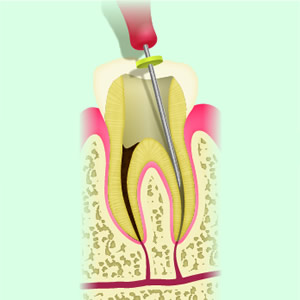
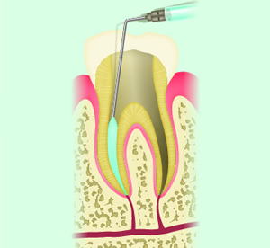
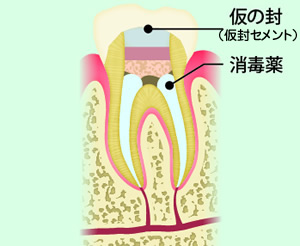
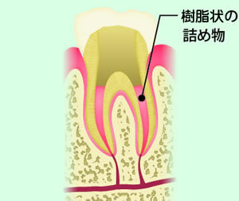
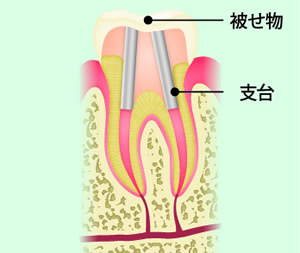
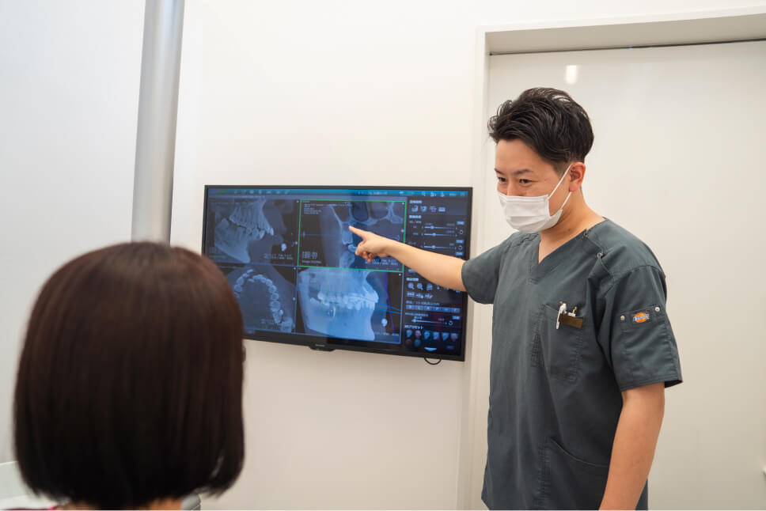
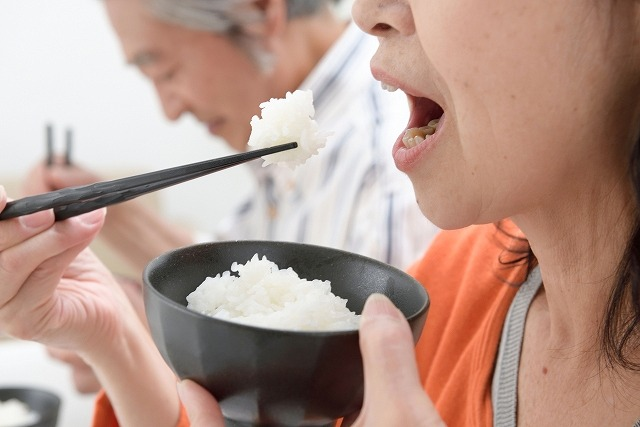

根管治療とは？
根管治療とは？
根管治療とは歯の根管の中にある「むし歯に感染した歯の神経」「細菌」「過去に詰めた古い充填材」等を除去していく歯科の治療法です。ここでは当院の根管治療の考え方や流れ、診断方法や手技などについてご説明いたします。
アロハ歯科の根管治療の考え方
しっかりときちんと診断いたします
歯の根の本数、歯の形、その歯が細菌感染しているのか、どの根が感染していて、他の根は感染していないのか、そして何といってもその歯が「治療してよくなるかどうか」を診断で見極めます。
再治療、再根管治療の場合、少なからず歯にはダメージを与えるので、治療をすることで歯が持つのか持たないのか（歯の寿命が縮まるのか縮まらないのか）の診断は重要視します。
あくまでも歯を残して噛んでもらうという目標が根底にあります。
根管治療の診断
- その歯や神経が汚染されているかどうかの見極め（画像診断）
- 拡大鏡による目視
- プロービング（歯周病が進行していた場合、根の病気が見えることもあります）
- その歯を治療したとして上手くいくかどうかの判断
- 問診での痛みの見極め（いつ頃からどこがどのように痛いか、どうすると痛みが誘発するか）
- 再治療の場合、その歯は過去にいつ頃治療したか？（経過）
- 複数根の時は一つずつ診断（すべての根が悪くなっている訳ではない場合、治療アプローチが変わります）
また、どうしてその歯がむし歯になったのか？その考察も行います。
できるだけ神経を残す
まずは「できるだけ抜髄しない」「できるだけ歯髄を残す」方法を考えます。
歯髄が残せるのであれば、歯髄温存療法（間接覆髄）や直接覆髄などで対応し、極力歯髄を残す方法を取ります。
根管治療の流れ
上記の歯髄温存療法で保存が不可能な場合、やむを得ず抜髄（神経を取る）処置となります。
診断
マイクロスコープ（顕微鏡）、レントゲン、CTなどで根の形と問題点を見つけます。診断無くして治療無し。診断結果にて患者さまそれぞれに合わせた治療方法や治療計画を立てていきます。
当院では事前の診査・診断を重要視しています。抜髄の条件は、下記です。
- 自発痛が過去にあったか？
- 痛み・しみが止まらない
- 明らかにむし歯が大きすぎる
ファイルで感染した神経をかき出しキレイにする
細菌感染を起こした神経（歯髄）をかきだして取り、歯の中で繁殖した細菌を減らしていきます。歯を痛めないよう細心の注意を払います。
また最初の歯の根の中に道具を入れる処置がすごく大切です（イニシャルトリートメント）。そこのポイントを雑にしてしまうと治療予後が悪くなります。そのためには下記に気を付けています。
- 器具の滅菌をしっかりと行う
- ラバーダム防湿をして隔壁を作る（根管の中に余計な細菌を入れない）
- 細菌感染をしっかり取る（むし歯をしっかりと取る）
- 根の形を極力壊さない（根はファイルで壊れやすいため）
※再根管治療の場合、以前に詰めていた根充材を取る作業を行います。
薬剤で殺菌
管の中を薬剤でキレイ洗い、感染している歯質と根管内の清掃をします。
上記のファイルで取れない箇所はここで根管洗浄をしっかり行います。
消毒薬を詰めて仮封（根管貼薬）
消毒薬を詰めて仮封（根管貼薬）
消毒薬を詰めて、新たな細菌が入らないよう仮の封をします。この仮封セメントは適切な厚みの確保、そして適切なセメント材料の選択をします。
2～3回の通院でSTEP②③④を繰り返し、念入りに殺菌をし徐々に根の中の細菌をできるだけ減らしてキレイにしていきます。
根管充填
十分に殺菌ができた段階で、樹脂状の詰め物（ガッタバーチャ）をします。
この詰め物はケースによりMTAセメントという材料になることもあります。
土台と被せ物
ガッチリ丈夫に封鎖ができたら、その上に被せ物を支える土台を作り、最終的な被せ物をセットします。
被せ物から細菌が侵入しないよう、精度の良い被せ物を作りピッタリと接着します。
治療回数の目安
ケースにもよりますが抜髄の場合、
＊上記は充填処置の回数です。詰め物や被せ物の通院は別途になります。
根管治療のアイテム
- 高倍率拡大鏡の使用
- レントゲン撮影（デンタル）
- 根の形態を把握するためのCT撮影
- ニッケルチタンファイルの使用
- ラバーダム防湿
- 超音波器具
など、精密な根管治療を行う際のさまざまな条件を満たしております。
根管治療のゴールとは
根管治療のゴールとは
よく「根管治療のゴールは歯が残ること」と皆さんおっしゃるのですが、歯が残る事だけが決してゴールではないと思います。
ゴールはあくまでも「何でも噛めて食事が出来て健康寿命が延びること」です。そのために歯は絶対に必要な物。インプラント等の代替え治療も存在しますが「噛みやすさ」「噛みごこち」という観点では、やっぱり自分自身の天然の歯が一番いいわけです。
そのためには歯を残す努力が必要だと考えます。逆に噛めなくて具合の悪い歯をいつまでもずっと残すというのもケースによっては考えものです。
噛めることが健康寿命につながります
歯科医療全体のゴールは歯を残す事でそれも大事。ですが例えば介護の現場であれば、残るか残らないかの歯を残しても逆に困ってしまう事も。寝たきりの状況では、自宅や施設で抜歯処置しなければいけなくなります。それであれば寝たきりになる前に抜いておいて入れ歯にしたほうが良いケースもあります。
上記はあくまで健康寿命が終わった方のケースですが、私たち歯科医院は口腔機能の低下による身体の衰え（オーラルフレイル）になりにくいようにするために「できるだけ歯を残す」そして「その歯でしっかりと食事をしていただく」という状況にできるだけもっていくことを患者さまと一緒に目指しています。
当院の根管治療のゴールは「噛める」こと
上記のように、食生活を含め健康的な生活の質を上げるために、歯はすごく大切な存在です。
もしかしたら他院さんとは根管治療のポイントが違うかもしれませんが、当院の根管治療のゴールは「噛めること」なのです。
実際に、歯科治療後に歯が残った人全員が噛めているのか？…現状では違う場合も多々見てきています。
例え歯が残ったとしても歯に違和感を感じ続けるようであれば、人は自然とその歯をよけて変に噛むようになります。果してそれで本当に良いのでしょうか？ 患者さまも歯科医師も深く考えなければいけないテーマでもあると思います。
ドクターより
基礎に忠実に、シンプルに。これが当院の根管治療への姿勢です。
「根管治療」と聞くと想像しにくい分かりにくい歯科治療の分野だと思います。
一般的に成功率は世界のTOPレベルの歯科医師による統計で、
- 根管治療（抜髄）：95％以上
- 感染根管治療：60～70％未満
と言われています。上記のように感染根管治療に関しては3～4割は治らないケースもあります。
しかしどのようなケースでも治るように（治すように）歯科医師側が最善を尽くすのは姿勢として大事なことだと思います。
「根管治療は歯科医の良心」という面白い言葉を言った先生がいます。その点では、やはり当院としては歯を残して噛むことに関してはすごく大事なことだと思っており、根管治療は手の抜けない分野です。
新システムでのオンライン予約をご利用ください。
※現在治療中の方は直接お電話にてご予約をお取りください。
| 月 | 火 | 水 | 木 | 金 | 土 | 日 | |
|---|---|---|---|---|---|---|---|
| 09:00～13:00 | ● | ● | ● | - | ● | ● | - |
| 15:00～19:00 | ● | ● | ● | - | ● | ● | - |
【最終受付時間】午前 12:00まで/午後 18:20まで
【休診日】木曜・日曜・祝日
※祝日のある週は、木曜も診療いたします。
駐車場19台
電子マネー決済可

出雲市小山町233-1
JR山陰本線(米子～益田) 出雲市 車8分
出雲市駅から直線距離で1756m